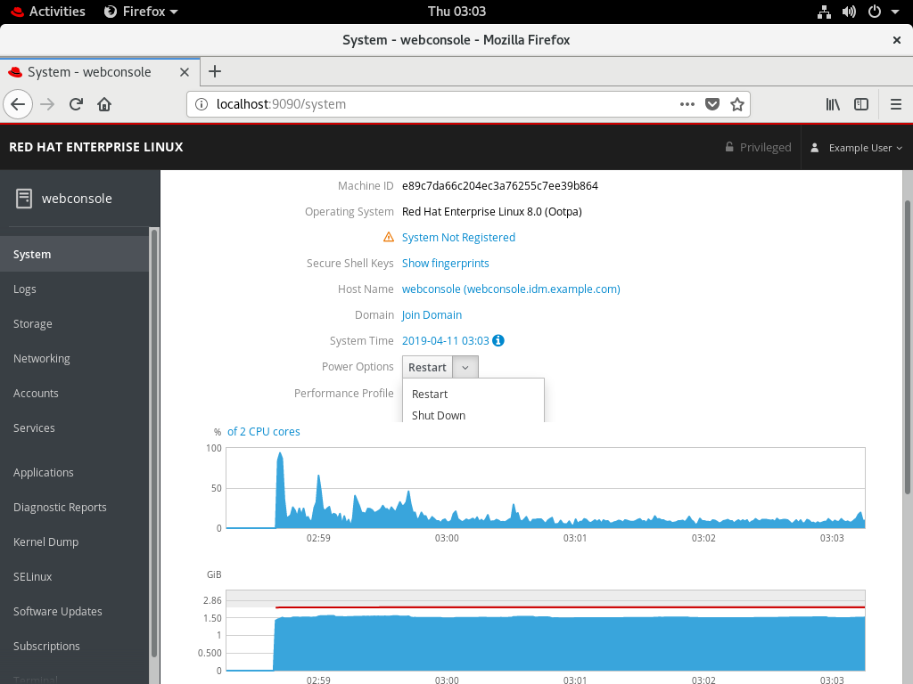
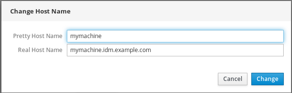
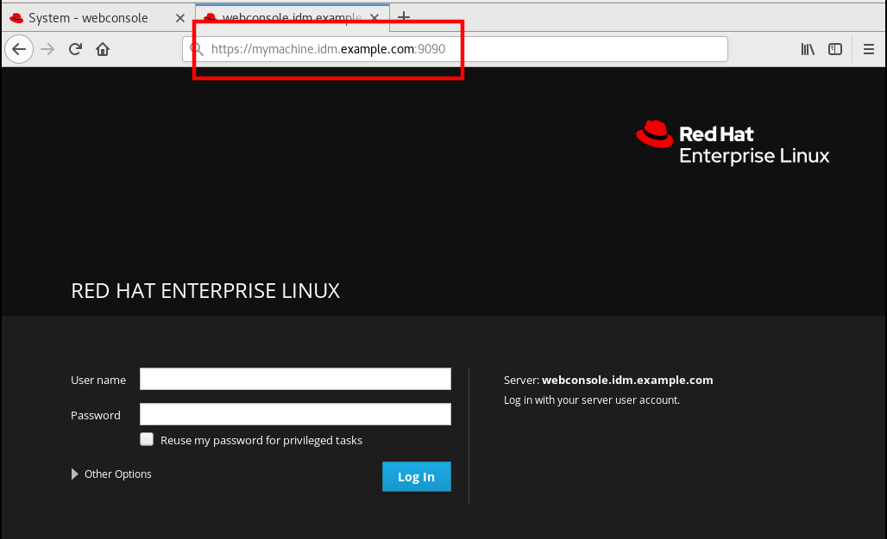
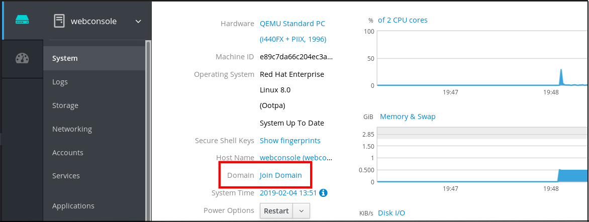
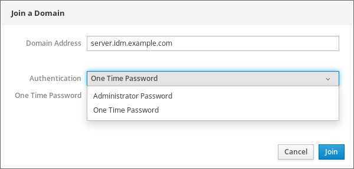
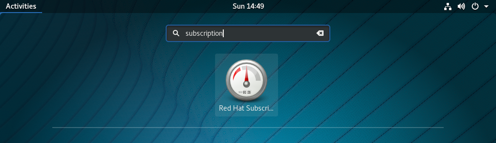
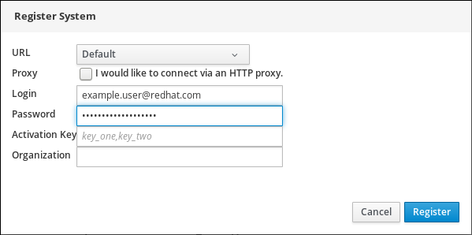

Chapter 9. 在Red Hat Enterprise Linux中开始使用系统管理
以下部分概述了系统管理员在安装Red Hat Enterprise Linux后可能需要执行的基本任务。
注意
这些任务可以包括通常在安装过程中已经完成的项目，但是不必必须完成它们，例如系统的注册。处理此类任务的部分简要概述了在安装过程中如何实现这一目标以及相关文档的链接。
有关Red Hat Enterprise Linux安装的信息，请参阅执行标准RHEL安装 。
注意
以下部分提到了一些要执行的命令。root用户需要输入的命令在提示符中有# ，而普通用户可以执行的命令在提示符中有$ 。
虽然可以通过命令行完成所有安装后任务，但您也可以使用RHEL 8 Web控制台执行其中的一些任务。
RHEL 8 Web控制台是交互式服务器管理界面。它从浏览器中的真实Linux会话直接与操作系统交互。
Web控制台可以执行以下任务：
- 监控基本系统功能，例如硬件信息，时间配置，性能配置文件，与域域的连接
- 检查系统日志文件
- 管理网络接口和配置防火墙
- 处理码头图像
- 管理虚拟机
- 管理用户帐户
- 监视和配置系统服务
- 创建诊断报告
- 设置内核转储配置
- 管理包
- 配置SELinux
- 更新软件
- 管理系统订阅
- 访问终端
有关安装和使用RHEL 8 Web控制台的更多信息，请参阅使用Web控制台管理系统 。
在本章中，您将学习如何在Web控制台中执行基本系统设置，从而能够：
- 在Web控制台中重新启动或关闭系统。
- 更改系统主机名。
- 将系统加入域。
- 配置时区和时区。
- 更改性能配置文件。
以下过程描述了在Web控制台中执行的系统重新启动。
先决条件
必须安装和访问Web控制台。
有关详细信息，请参阅安装Web控制台 。
程序
登录RHEL 8 Web控制台。
有关详细信息，请参阅登录Web控制台 。
- 单击系统 。
在“ 电源选项”下拉列表中，选择“ 重新启动” 。

- 如果有用户登录系统，请在“ 重新启动”对话框中写入重新启动的原因。
在“ 延迟”下拉列表中，选择时间间隔。

- 单击重启 。
系统将根据您的选择重新启动。
以下过程描述了在Web控制台中执行的系统关闭。
先决条件
必须安装和访问Web控制台。
有关详细信息，请参阅安装Web控制台 。
程序
登录RHEL 8 Web控制台。
有关详细信息，请参阅登录Web控制台 。
- 单击系统 。
在“ 电源选项”下拉列表中，选择“关机” 。
- 如果有用户登录系统，请在“ 关闭”对话框中写入关闭原因。
- 在“ 延迟”下拉列表中，选择时间间隔。
- 单击“关机” 。
系统将根据您的选择关闭。
主机名标识系统。默认情况下，主机名设置为localhost ，但您可以更改它。
主机名由两部分组成：
- 主机名 - 它是标识系统的唯一名称。
- 域 - 如果要在网络中使用计算机并使用名称而不是IP地址，则需要将域添加为主机名后面的后缀。例如：
mymachine.example.com
您还可以在RHEL Web控制台中配置漂亮的主机名。漂亮的主机名允许您输入大写字母，空格等主机名。漂亮的主机名显示在Web控制台中，但它不必与主机名对应。
例：
漂亮的主机名： 我的机器主机名： mymachine真实主机名（完全限定的域名）： mymachine.idm.company.com
主机名存储在/etc/hostname文件中，但是，您可以在Web控制台中设置或更改主机名。
先决条件
必须安装和访问Web控制台。
有关详细信息，请参阅安装Web控制台 。
程序
登录RHEL 8 Web控制台。
有关详细信息，请参阅登录Web控制台 。
- 单击系统 。
单击当前主机名。

- 在“ 更改主机名”对话框中，在“ Pretty Host Name”字段中输入主机名。
在Real Host Name字段中，漂亮的名称将与域名复合。
如果主机名与美特主机名不对应，则可以手动更改主机名。
单击更改 。

要验证主机名是否已正确配置，请尝试从Web控制台注销，并使用新主机名将地址添加到浏览器。

以下过程描述了将RHEL 8系统加入IdM域。
先决条件
- IdM域可以从您要加入的客户端运行并且可以访问。
- IdM域管理员凭据。
程序
登录RHEL Web控制台。
有关详细信息，请参阅登录Web控制台 。
- 打开“ 系统”选项卡。
单击加入域 。

- 在“ 加入域”对话框中，在“ 域地址”字段中输入IdM服务器的主机名。
在“ 身份验证”下拉列表中，选择是否要使用密码或一次性密码进行身份验证。

- 在“ 域管理员名称”字段中，输入IdM管理帐户的用户名。
- 在密码字段中，根据您在上面的“ 身份验证”下拉列表中选择的内容添加密码或一次性密码。
单击加入 。

如果RHEL 8 Web控制台未显示错误，则系统已加入IdM域，您可以在“ 系统”屏幕中看到域名。

警告
如果在“ 系统”屏幕中单击加入的域，系统将显示一个警告对话框，其中包含有关离开域的信息。如果单击“ 离开” ，系统将离开域。

本节介绍如何设置：
- 正确的时区
- NTP服务器提供的自动时间设置。
- 特定的NTP服务器。
先决条件
必须安装和访问Web控制台。
有关详细信息，请参阅安装Web控制台 。
程序
登录RHEL 8 Web控制台。
有关详细信息，请参阅登录Web控制台 。
- 单击系统 。
单击当前系统时间。

- 在“ 更改系统时间”对话框中，根据需要更改时区。
在“ 设置时间”下拉菜单中，选择：
- 手动
- 自动使用NTP服务器 - 这是默认选项。如果系统时间正确，请保持原样。
- 自动使用特定NTP服务器 - 仅当您需要将系统与特定NTP服务器同步并添加服务器的DNS名称或IP地址时，才使用此选项。
单击更改 。

现在，“ 系统”选项卡中提供了更改。
Red Hat Enterprise Linux 8包括性能配置文件优化：
- 使用桌面的系统
- 延迟表现
- 网络性能
- 功耗低
- 虚拟机
以下过程介绍如何在Web控制台中设置性能配置文件。
RHEL 8 Web控制台配置tuned服务。
有关已tuned服务的详细信息，请参阅监视和管理系统状态和性能 。
先决条件
必须安装和访问Web控制台。
有关详细信息，请参阅安装Web控制台 。
程序
登录RHEL 8 Web控制台。
有关详细信息，请参阅登录Web控制台 。
- 单击系统 。
在“ 性能配置文件”字段中，单击当前性能配置文件。

- 在“ 更改性能配置文件”对话框中，根据需要更改配置文件。
单击更改 。

现在，“ 系统”选项卡中提供了更改。
红帽企业Linux系统角色是Ansible角色和模块的集合，提供远程管理多个RHEL系统的配置界面。该界面支持跨多个RHEL版本管理系统配置，以及采用新的主要版本。
Red Hat Enterprise Linux系统角色随Red Hat Enterprise Linux 7.4一起推出。有关更多信息，请参阅Red Hat Enterprise Linux（RHEL）系统角色 Red Hat知识库文章。
在Red Hat Enterprise Linux 8上，该界面目前包含以下角色：
- SELinux的
- 内核转储
- 网络
- 时间同步
所有这些角色都由AppStream库中提供的rhel-system-roles包提供。
要应用特定角色，您需要满足以下先决条件。
先决条件
rhel-system-roles软件包已安装在您要用作控制节点的系统上：~]# yum install rhel-system-roles
该Ansible引擎库已经启用，并且
ansible包已经安装了要作为控制节点中使用的系统。运行使用红帽企业Linux系统角色的剧本需要ansible包。如果您没有Red Hat Ansible Engine订阅，则可以使用Red Hat Enterprise Linux订阅提供的受限支持的Red Hat Ansible Engine版本。 在这种情况下，请按照下列步骤操作
启用RHEL Ansible Engine存储库：
~]# subscription-manager refresh ~]# subscription-manager repos --enable ansible-2-for-rhel-8-x86_64-rpms
安装Ansible引擎：
~]# yum install ansible
如果您有Red Hat Ansible Engine订阅，请按照如何下载和安装Red Hat Ansible Engine中描述的步骤进行操作？ 。
您可以创建一个Ansible剧本。
Playbooks代表Ansible的配置，部署和编排语言。通过使用Playbooks，您可以声明和管理远程计算机的配置，部署多个远程计算机或协调任何手动订购过程的步骤。
一个剧本是一个或多个列表
plays。每个play都可以包含Ansible变量，任务或角色。Playbooks是人类可读的，它们以
YAML格式表示。有关playbooks的更多信息，请参阅Ansible文档
要应用特定角色，请使用以下过程。
程序
创建一个包含所需角色的Ansible剧本。
使用角色的经典方法是通过
roles:给定play选项，如下例所示：--- - hosts: webservers roles: - rhel-system-roles.network - rhel-system-roles.timesync有关在playbooks中使用角色的更多信息，请参阅Ansible文档 。
有关示例playbooks，请参阅Ansible示例 。
注意
每个角色都包含一个README文件，该文件记录了如何使用角色和支持的参数值。您还可以在角色的文档目录下找到特定角色的示例手册。默认情况下，此类文档目录随
rhel-system-roles软件包提供，可在以下位置找到：/usr/share/doc/rhel-system-roles-<version>/SUBSYSTEM/
其中SUBSYSTEM是包含单个角色管理的子系统的名称 - selinux，kdump，network或timesync。
通过运行
ansible-playbook命令在目标主机上执行ansible-playbook：ansible-playbook -i <name of the inventory> <name of the playbook>
库存是Ansible工作的系统列表。有关如何创建和清点以及如何使用它的更多信息，请参阅Ansible文档 。
如果您尚未提前创建库存，即使在运行
ansible-playbook时也可以这样做：对于只有一个目标主机，您想要运行该剧本的情况，请使用：
ansible-playbook -i host1, <name of the playbook>
对于具有多个目标主机的情况，您要对其运行该剧本，请使用：
ansible-playbook -i host1,host2,….,hostn <name of the playbook>
有关使用
ansible-playbook命令的更多详细信息，请参阅ansible-playbook手册页。
环境的基本配置包括：
- 日期和时间
- 系统区域设置
- 键盘布局
这些项目的设置通常是安装过程的一部分。有关更多信息，请参阅执行标准RHEL安装 。
出于多种原因，准确的计时很重要。在Red Hat Enterprise Linux中， NTP协议确保了计时， NTP协议由在用户空间中运行的守护程序实现。用户空间守护程序更新内核中运行的系统时钟。系统时钟可以通过使用各种时钟源来节省时间。
Red Hat Enterprise Linux 8使用chronyd守护程序来实现NTP 。 chronyd可从chrony包中获得。有关使用chronyd配置和使用NTP更多信息，请参阅第5章， 使用Chrony套件配置NTP 。
显示当前日期和时间
要显示当前日期和时间，请使用以下命令之一：
~]$
date~]$timedatectl请注意，
timedatectl命令提供更详细的输出，包括通用时间，当前使用的时区，网络时间协议（NTP）配置的状态以及一些其他信息。
有关在安装期间配置日期和时间的详细信息，请参阅执行标准RHEL安装 。
Web控制台中的时间设置描述使用Web控制台配置时间设置 。
系统范围的语言环境设置存储在/etc/locale.conf文件中，该文件在systemd守护程序的早期启动时读取。/etc/locale.conf中配置的区域设置由每个服务或用户继承，除非单个程序或单个用户覆盖它们。
处理系统区域设置的基本任务：
列出可用的系统区域设置：
~]$
localectl list-locales显示系统区域设置的当前状态：
~]$
localectl status设置或更改默认系统区域设置：
~]# localectl set-locale LANG=locale
在安装过程中配置网络访问的方法：
- Anaconda安装程序的图形用户界面中“安装摘要”屏幕上的“ 菜单
- Anaconda安装程序的文本模式中的选项
- Kickstart文件
安装完成后系统首次引导时，将自动激活您在安装期间配置的所有网络接口。
有关在安装过程中配置网络访问的详细信息，请参阅安装Red Hat Enterprise Linux 8 。
运行以下命令以使用nmcli实用程序管理网络连接。
注意
当按Tab键两次时， nmcli实用程序具有强大的语法完成功能。您需要安装bash-completion软件包才能启用它。
要创建新连接：
~]# nmcli con add type type of the connection con-name connection name ifname ifname ipv4.addresses ipv4 address ipv4.gateway gateway address
在这里，替换：
- 所需类型的设备的连接类型
- 连接名称所需的连接名称
- ifname由所需的设备名称
- ipv4地址所需的IPv4地址/网络掩码
- 网关地址所需的网关地址
请注意， ipv4地址和网关地址是可选设置，而所有剩余设置都是必需的。
您还可以在辅助模式下创建新连接。为此，请运行此命令，并按照提示输入此连接的特定配置设置的说明进行操作：
~]# nmcli -a con add
要修改现有连接：
~]# nmcli con mod connection name setting.property newvalue
在这里，替换：
- 连接名称 ，您要修改的连接的名称
- setup.property由您要修改的配置设置
- newvalue按此配置设置所需的值
例如，为了IPv4地址（ipv4.method）的配置的方式设置为auto为连接命名enp0 ，使用下面的命令：
~]# nmcli con mod enp0 ipv4.method auto
要编辑连接，请运行以下命令：
~]# nmcli connection edit connection name在此处，将连接名称替换为要编辑的连接的名称。
要显示所有连接：
~]# nmcli con show
要显示活动连接：
~]# nmcli con show --active
要显示特定连接的所有配置设置：
~]# nmcli con show con-name connection name在这里，用所需连接的名称替换连接名称 。
然后，按照提示输入特定配置设置的说明进行操作。要显示任何配置设置的所有可能选项，请在编辑器中使用print命令。
在Web控制台中， 菜单使您能够：
- 显示当前接收和发送的数据包
- 显示可用网络接口的最重要特征
- 显示网络日志的内容。
- 添加各种类型的网络接口（绑定，团队，网桥，VLAN）

您可以使用network角色在多台目标计算机上配置网络连接。
network角色允许配置以下类型的接口：
- 以太网络
- 桥
- 保税
- VLAN
- MacVLAN
- Infiniband的
每个主机所需的网络连接在network_connections变量中作为列表提供。
警告
network角色完全按照network_connections变量中的指定更新或创建目标系统上的所有连接配置文件。因此，如果选项仅存在于系统上但不存在于network_connections变量中，则network角色将从指定的配置文件中删除选项。
以下示例显示如何应用network角色以确保存在具有所需参数的以太网连接：
例1.1。应用网络角色以设置具有所需参数的以太网连接的示例手册
# SPDX-License-Identifier: BSD-3-Clause
---
- hosts: network-test
vars:
network_connections:
# Create one ethernet profile and activate it.
# The profile uses automatic IP addressing
# and is tied to the interface by MAC address.
- name: prod1
state: up
type: ethernet
autoconnect: yes
mac: "00:00:5e:00:53:00"
mtu: 1450
roles:
- rhel-system-roles.network有关应用network角色的更多信息，以及有关使用角色的更多示例，请参阅系统角色文档 。
Red Hat Enterprise Linux上安装的产品，包括操作系统本身，都包含在订阅中。
订阅Red Hat Content Delivery Network用于跟踪：
- 注册系统
- 在这些系统上安装的产品
- 附加到这些产品的订阅
您的订阅可以在安装过程中注册。有关更多信息，请参阅执行标准RHEL安装 。
如果您在安装过程中未注册系统，则可以通过以下步骤进行操作。请注意，此过程中的所有命令都需要以root用户身份执行。
以下描述使用RHEL 8 Web控制台订阅新安装的Red Hat Enterprise Linux。
先决条件
红帽客户门户中的有效用户帐户。
请参阅创建Red Hat登录页面。
- RHEL系统的有效订阅。
程序
在搜索字段中键入订阅，然后按Enter键。

或者，您可以登录RHEL 8 Web控制台。有关详细信息，请参阅登录Web控制台 。
在特权任务的polkit身份验证对话框中，添加对话框中显示的用户名密码。

- 单击“ 验证” 。
在“ 订阅”对话框中，单击“ 注册” 。

输入您的客户门户凭据。

输入您组织的名称。
如果您在Red Hat客户门户中有多个帐户，则需要添加组织名称或组织ID。要获取组织ID，请转到您的Red Hat联系点。
- 单击“ 注册”按钮。
此时，您的RHEL 8系统已成功注册。

本节提供的信息可指导您完成软件安装的基础知识。它提到了您需要满足的先决条件才能安装软件，提供有关软件包和软件存储库的基本信息，并提供执行与软件安装相关的基本任务的方法。
Red Hat Content Delivery Network订阅服务提供了一种处理Red Hat软件清单的机制，使您能够安装其他软件或更新已安装的软件包。您可以在注册系统并附加订阅后开始安装软件，如“安装后注册系统”一节中所述 。
Red Hat Enterprise Linux系统上的所有软件都分为RPM软件包，这些软件包存储在特定的存储库中。当系统订阅Red Hat Content Delivery Network时，会在/etc/yum.repos.d/目录中创建一个存储库文件。
使用yum实用程序来管理包操作：
- 搜索有关包的信息
- 安装包
- 更新包
- 删除包
- 检查当前可用存储库的列表
- 添加或删除存储库
- 启用或禁用存储库
有关与软件安装相关的基本任务的信息，请参阅“使用订阅管理器和yum管理基本软件安装任务”一节 。
安装操作系统后可能需要的最基本的软件安装任务包括：
列出所有可用的存储库：
~]# subscription-manager repos --list
列出所有当前启用的存储库：
~]$
yum repolist启用或禁用存储库：
~]# subscription-manager repos --enable repository~]# subscription-manager repos --disable repository搜索与特定字符串匹配的包：
~]$
yum searchstring安装包：
~]# yum install package_name更新所有包及其依赖项：
~]# yum update
更新包：
~]# yum update package_name卸载程序包以及依赖它的任何程序包：
~]# yum remove package_name列出所有已安装和可用包的信息：
~]$
yum list all列出所有已安装软件包的信息：
~]$
yum list installed
Systemd是Linux操作系统的系统和服务管理器，它引入了systemd单元的概念。
本节提供有关如何确保在引导时启用或禁用服务的信息。它还解释了如何通过Web控制台管理服务。
您可以确定在安装过程中已在启动时启用或禁用的服务，也可以在已安装的操作系统上启用或禁用服务。
要在安装过程中创建启动或禁用的服务列表，请使用Kickstart文件中的services选项：
services [--disabled=list] [--enabled=list]
注意
已禁用的服务列表在启用的服务列表之前处理。因此，如果两个列表中都显示服务，则会启用该服务。应以逗号分隔格式提供服务列表。不要在服务列表中包含空格。
要在已安装的操作系统上启用或禁用服务：
~]# systemctl enable service_name~]# systemctl disable service_name有关启用和禁用服务的更多详细信息，请参阅“管理系统服务”一节 。
计算机安全性是保护计算机系统免受其硬件，软件或信息的盗窃或损坏，以及它们提供的服务的中断或误导。因此，确保计算机安全性不仅是处理敏感数据或处理某些业务交易的企业的重要任务。
计算机安全包括各种功能和工具。本节仅介绍安装操作系统后需要配置的基本安全功能。有关保护Red Hat Enterprise Linux的详细信息，请参阅配置和管理安全性 。
防火墙是一种网络安全系统，它根据预定的安全规则监视和控制传入和传出的网络流量。防火墙通常在可信，安全的内部网络和另一个外部网络之间建立屏障。
防火墙由firewalld服务提供，该服务在安装期间自动启用。但是，如果您明确禁用了该服务，则可以重新启用它，如“重新启用firewalld服务”一节中所述 。
如果在安装后禁用了firewalld服务，Red Hat建议考虑重新启用它。
即使是普通用户，您也可以显示firewalld的当前状态：
~]$ systemctl status firewalld如果firewalld未启用并正在运行，请切换到root用户，并更改其状态：
~]# systemctl start firewalld
~]# systemctl enable firewalld
有关配置和使用防火墙的详细信息，请参阅使用和配置防火墙 。
安全性增强型Linux（SELinux）是系统安全性的附加层，用于确定哪个进程可以访问哪些文件，目录和端口。
SELinux说
SELinux有两种可能的状态：
- 启用
- 残
禁用SELinux时 ，仅使用自由访问控制（DAC）规则。
SELinux模式
启用SELinux后 ，它可以以下列模式之一运行：
- 强制执行
- 宽容
强制模式意味着强制执行SELinux策略。SELinux基于SELinux策略规则拒绝访问，并仅启用特别允许的交互。执行模式是安装后的默认模式，也是最安全的SELinux模式。
许可模式意味着不强制执行SELinux策略。SELinux不拒绝访问，但是如果在强制模式下运行，则会拒绝拒绝操作。许可模式是安装期间的默认模式。在某些特定情况下，以许可模式运行也很有用，例如，在解决问题时需要访问访问向量缓存（AVC）拒绝。
有关SELinux的更多信息，请参阅配置和管理安全性 。
默认情况下， SELinux在安装期间以许可模式运行，在安装完成时以强制模式运行。
但是，在某些特定情况下， SELinux可能会明确设置为许可模式，甚至可能在已安装的操作系统上禁用。这可以在kickstart配置中设置。
重要
Red Hat建议您将系统保持在强制模式。
要显示当前的SELinux模式，并根据需要设置模式：
确保SELinux所需的状态
显示当前有效的SELinux模式：
~]$
getenforce如果需要，在SELinux模式之间切换。
该开关可以是临时的也可以是永久的。临时交换机在重新启动时不会持久，而永久交换机则是。
要临时切换到强制或许可模式：
~]# setenforce Enforcing
~]# setenforce Permissive
要永久设置SELinux模式，请修改
/etc/selinux/config配置文件中的SELINUX变量。例如，要将SELinux切换为强制模式：
# This file controls the state of SELinux on the system. # SELINUX= can take one of these three values: # enforcing - SELinux security policy is enforced. # permissive - SELinux prints warnings instead of enforcing. # disabled - No SELinux policy is loaded. SELINUX=enforcing
您可以使用selinux角色在多个目标计算机上管理各种SELinux本地自定义。
以下示例显示如何应用selinux角色来设置SELinux模式，并在需要应用更改时重新引导托管主机：
例1.2。应用selinux角色设置SELinux模式的示例playbook
- hosts: selinux-test
vars:
# possible values: enforcing, permissive, disabled
selinux_state: enforcing
tasks:
- name: execute the role and catch errors
block:
- include_role:
name: rhel-system-roles.selinux
rescue:
# Fail if failed for a different reason than selinux_reboot_required.
- name: handle errors
fail:
msg: "role failed"
when: not selinux_reboot_required
- name: Unconditionally reboot the machine with all defaults
reboot:有关应用selinux角色来管理各种本地自定义的更多信息，例如将restorecon应用于文件系统树的某些部分，或管理文件上下文，SELinux布尔值，登录或端口，请参阅系统角色文档 。
如果要保护与其他计算机的通信，可以使用基于SSH的身份验证。
Secure Shell（SSH）是一种促进客户端 - 服务器通信的协议，允许用户远程登录到运行SSH的任何主机系统。SSH保护连接。客户端使用加密将其认证信息发送到服务器，并且在会话期间发送和接收的所有数据都在加密下传输。
SSH使其用户无需密码即可进行身份验证。为此，SSH使用私有 - 公钥方案。
有关SSH的更多信息，请参阅配置和管理安全性 。
为了能够使用SSH连接，请创建一对由公钥和私钥组成的两个密钥。
要提高系统安全性，可以禁用root用户的SSH访问权限，默认情况下已启用。
禁用SSH root登录
访问
/etc/ssh/sshd_config文件：~]# vi /etc/ssh/sshd_config
将读取
#PermitRootLogin yes的行更改为：PermitRootLogin no
重启
sshd服务：~]# systemctl restart sshd
注意
使用PermitRootLogin no ， root用户无法直接登录系统。或者，可以允许root用户登录，但使用无密码身份验证方法（通常是基于密钥的身份验证），在“配置基于密钥的SSH访问”一节中进行了描述。要确保这一点，请在/etc/ssh/sshd_config文件中指定PermitRootLogin prohibit-password 。
Red Hat Enterprise Linux是一个多用户操作系统，它允许不同计算机上的多个用户访问安装在一台计算机上的单个系统。每个用户都在自己的帐户下运营，因此管理用户帐户是红帽企业Linux系统管理的核心要素。
正常和系统帐户
为特定系统的用户创建普通帐户。在正常的系统管理期间，可以添加，删除和修改此类帐户。
系统帐户代表系统上的特定应用程序标识符。此类帐户通常仅在软件安装时添加或操作，并且稍后不会对其进行修改。
警告
系统帐户被假定为在系统上本地可用。如果远程配置和提供这些帐户，例如在LDAP配置的实例中，则可能发生系统中断和服务启动故障。
对于系统帐户，保留低于1000的用户ID。对于普通帐户，您可以使用从1000开始的ID。但是，建议的做法是从5000开始分配ID。有关更多信息，请参阅保留的用户和组ID 。可以在/etc/login.defs文件中找到分配ID的准则：
# Min/max values for automatic uid selection in useradd # UID_MIN 1000 UID_MAX 60000 # System accounts SYS_UID_MIN 201 SYS_UID_MAX 999
哪些组是什么以及它们可以用于哪些目的
实体中的一个组，它将多个用户帐户绑定在一起以实现共同目的，例如授予对特定文件的访问权限。
管理用户帐户和组的最基本任务以及相应的命令行工具包括：
显示用户和组ID：
~]$
id创建新用户帐户：
~]# useradd [options] user_name为属于用户名的用户帐户分配新密码：
~]# passwd user_name将用户添加到组：
~]# usermod -a -G group_name user_name
有关管理用户和组的详细信息，请参阅“用户和组简介”一节 。
通过RHEL 8 Web控制台中显示的用户帐户，您可以：
- 访问系统时对用户进行身份验证。
- 设置他们对系统的访问权限。
RHEL 8 Web控制台显示系统中的所有用户帐户。因此，您可以在首次登录Web控制台后看到至少一个用户帐户。
如果您已登录RHEL 8 Web控制台，则可以：
- 创建新用户帐户。
- 改变他们的参数。
- 锁定帐户。
- 终止用户会话。
您可以在“ 帐户”设置中找到帐户管理。

下面介绍如何在RHEL 8 Web控制台中添加系统用户帐户以及为帐户设置管理权限。
程序
- 登录RHEL Web控制台。
- 单击帐户 。
- 单击“ 创建新帐户” 。
在“ 全名”字段中，输入用户的全名。
RHEL Web控制台自动从全名建议用户名，并在“ 用户名”字段中填写。如果您不想使用由名字的第一个字母和整个姓氏组成的原始命名约定，请更新建议。
在“ 密码/确认”字段中，输入密码并重新键入密码以验证密码是否正确。放置在字段下方的颜色条显示输入密码的安全级别，这不允许您创建具有弱密码的用户。

- 单击“ 创建”以保存设置并关闭对话框。
- 选择新创建的帐户。
- 在“ 角色”项中选择“ Server Administrator ”。

现在，您可以在“ 帐户”设置中看到新帐户，并且可以使用凭据连接到系统。
本节介绍了内核崩溃转储机制，也称为kdump ，并在“kdump是什么以及可以使用哪些任务”一节中简要说明了kdump的用途。
激活kdump服务是安装过程的一部分，如安装Red Hat Enterprise Linux 8中所述 。本节总结了如何在安装后禁用kdump服务时如何在“确保在安装过程之后安装和启用kdump”一节中禁用它。
您还可以使用Web控制台配置kdump 。有关详细信息，请参阅“在RHEL 8 Web控制台中配置kdump”一节 。
如果系统崩溃，您可以使用名为kdump的内核崩溃转储机制，该机制允许您保存系统内存的内容以供以后分析。kdump机制依赖于kexec系统调用，该调用可用于从另一个内核的上下文启动Linux内核，绕过BIOS，并保留第一个内核的内存，否则这些内容将丢失。
当发生内核崩溃时， kdump使用kexec引导进入第二个内核，即捕获内核，它驻留在系统内存的保留部分，第一个内核无法访问。第二个内核捕获崩溃内核的内存，崩溃转储并保存它。
有关kdump的更多详细信息，请参阅管理，监视和更新内核 。
要确保安装了kdump ，并进行配置：
检查是否已安装kdump并配置kdump
要检查系统上是否安装了kdump ：
~]$
rpm -q kexec-tools如果未安装，要安装kdump ，请以
root用户身份输入：~]# yum install kexec-tools
配置kdump ：
使用命令行或图形用户界面，如管理，监视和更新内核中所述 。
如果需要安装图形配置工具：
~]# yum install system-config-kdump
您可以使用kdump角色在多台目标计算机上配置kdump 。
警告
kdump角色完全替换托管主机的kdump配置。如果应用了kdump角色，则所有先前的kdump设置都将丢失，即使角色变量未指定它们也是如此。/etc/sysconfig/kdump和/etc/kdump.conf配置文件将被替换。
以下示例显示如何应用kdump角色来设置故障转储文件的位置：
例1.3。应用kdump角色设置kdump文件位置的示例playbook
---
- hosts: kdump-test
vars:
kdump_path: /var/crash
roles:
- rhel-system-roles.kdump有关应用kdump角色来管理各种kdump配置的更多信息，请参阅系统角色文档 。
当软件或硬件故障破坏操作系统时，您需要一种机制来挽救系统。保存系统备份也很有用。Red Hat建议使用Relax-and-Recover（ReaR）工具来满足这些需求。
ReaR是一个灾难恢复和系统迁移实用程序，使您可以创建完整的救援系统。默认情况下，此救援系统仅恢复存储布局和引导加载程序，但不恢复实际的用户和系统文件。
此外，某些备份软件使您可以集成ReaR以进行灾难恢复。
ReaR可以执行以下任务：
- 在新硬件上引导救援系统
- 复制原始存储布局
- 恢复用户和系统文件
要安装ReaR，请以root用户身份输入：
~]# yum install rear genisoimage syslinux
使用/etc/rear/local.conf文件中的设置配置ReaR。
ReaR包含一个称为NETFS的完全集成的内置或内部备份方法。
要使ReaR使用其内部备份方法，请将这些行添加到/etc/rear/local.conf文件中：
BACKUP=NETFS BACKUP_URL=backup location
您还可以通过/etc/rear/local.conf添加到/etc/rear/local.conf来配置ReaR以在创建新备份存档时保留以前的备份存档：
NETFS_KEEP_OLD_BACKUP_COPY=y
要使备份增量，意味着每次运行仅备份更改的文件，请将此行添加到/etc/rear/local.conf ：
BACKUP_TYPE=incremental
解决问题时，您可能会欣赏包含有关操作系统的不同信息和消息的日志文件。Red Hat Enterprise Linux中的日志记录系统基于内置的syslog协议。特定程序使用此系统记录事件并将其组织到日志文件中，这在审核操作系统和解决各种问题时非常有用。
系统日志消息由两个服务处理：
systemd-journald守护进程rsyslog服务
systemd-journald守护程序从各种源收集消息，并将它们转发到rsyslog服务以进行进一步处理。收集消息的来源是：
- 核心
- 启动过程的早期阶段
- 守护进程启动和运行时的标准输出和错误
- 系统日志
rsyslog服务按类型和优先级对syslog消息进行排序，并将它们写入/var/log目录中的文件，其中日志是持久存储的。
系统日志消息根据它们包含的消息和日志类型存储在/var/log目录下的各个子目录中：
-
var/log/messages- 除下面提到的那些之外的所有系统日志消息 -
var/log/secure- 与var/log/secure性和身份验证相关的消息和错误 -
var/log/maillog- 与邮件服务器相关的消息和错误 -
var/log/cron- 与定期执行的任务相关的日志文件 -
var/log/boot.log- 与系统启动相关的日志文件

要获得Red Hat的支持，请使用Red Hat Customer Portal ，它可以访问您订阅的所有内容。
本节介绍：
- 获取红帽支持，在“通过红帽客户门户获取红帽支持”一节中
- 使用SOS报告解决问题，在“使用SOS报告解决问题”一节中
SOS报告从Red Hat Enterprise Linux系统收集配置详细信息，系统信息和诊断信息。打开支持案例时附加报告。
请注意， SOS报告是在sos软件包中提供的，该软件包未与Red Hat Enterprise Linux的默认最小安装一起安装。
要安装sos包：
~]# yum install sos
要生成SOS报告 ：
~]# sosreport
要将sos报告附加到您的支持案例，请参阅Red Hat知识库文章如何将文件附加到Red Hat支持案例？ 。请注意，在附加sos报告时，系统将提示您输入支持案例的编号。
有关SOS报告的更多信息，请参阅Red Hat知识库文章什么是sosreport以及如何在Red Hat Enterprise Linux 4.6及更高版本中创建sosreport？ 。